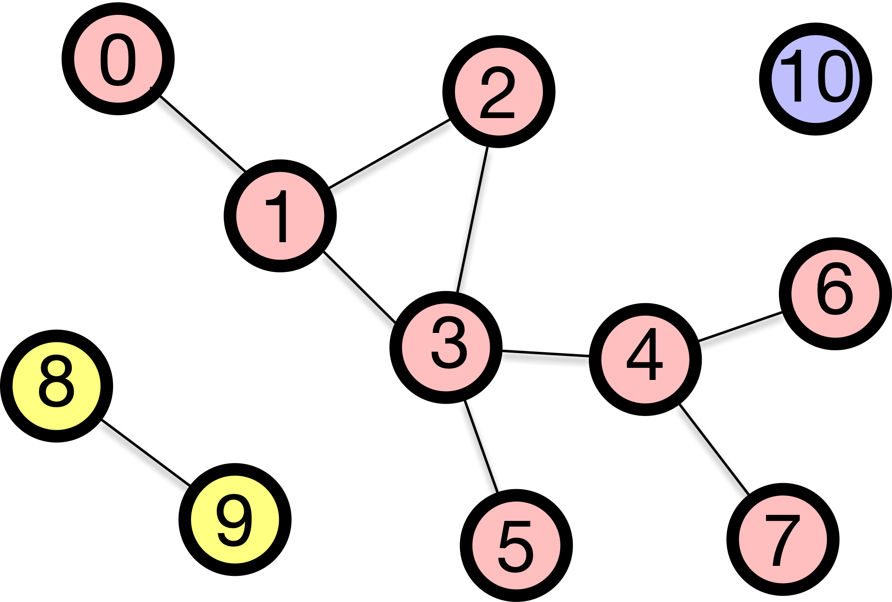
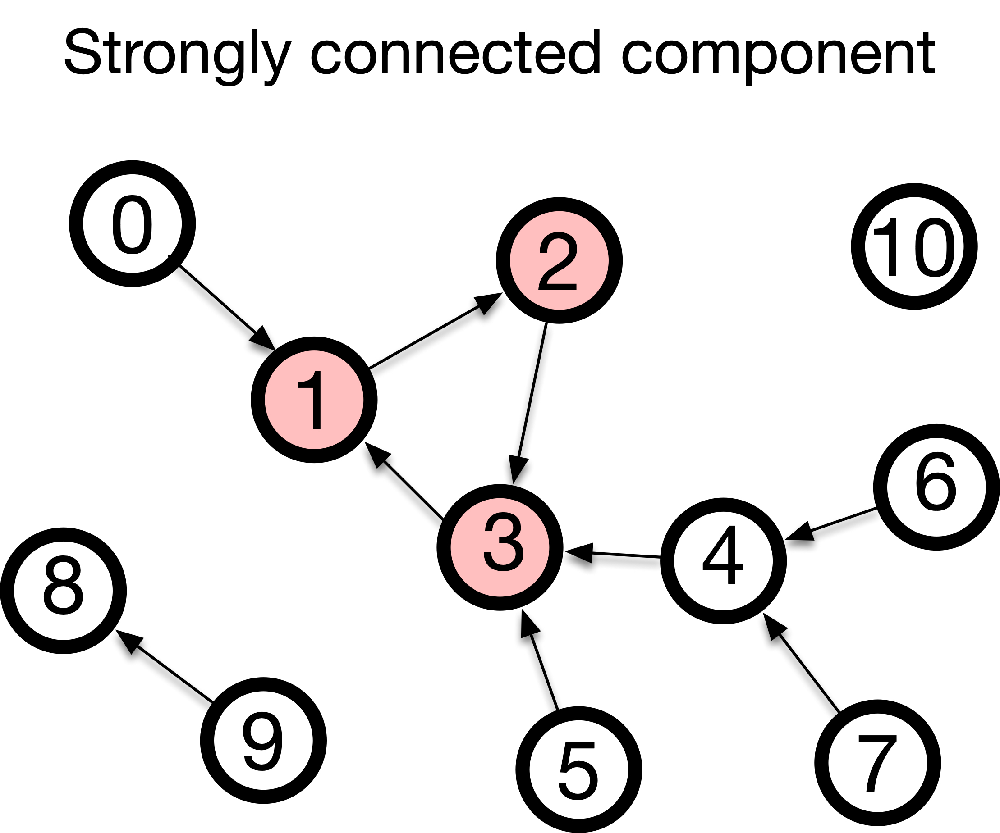

Five Words You Will Use All Semester
Euler’s proof needed exactly one technical term: degree. Everything after this module needs five more: walk, trail, path, circuit, and cycle. It also needs two objects: the adjacency matrix and the connected component. These sound like housekeeping, but they are not. Every later module is phrased in them, and this is the page you will come back to.
Walk, trail, path
| Term | Definition |
|---|---|
| Walk | A sequence of steps along edges, where both edges and nodes may be repeated. |
| Trail | A walk that does not repeat any edge. Nodes may repeat. |
| Path | A walk that never repeats a node, and therefore never repeats an edge either. |
The road-trip version: a walk is a casual drive that may pass the same street twice. A trail is a mail route that never passes the same street twice but may pass the same intersection again. A path is a tour of cities in which every city is new.
The three are nested: every path is a trail and every trail is a walk, and the restrictions only ever get tighter.
Circuit and cycle
A journey that ends where it began is closed. Closing the two stricter kinds gives two more words.
| Term | Definition |
|---|---|
| Circuit | A trail that starts and ends at the same node. |
| Cycle | A path that starts and ends at the same node, the start node being the one permitted repeat. |
With this vocabulary, the Königsberg problem becomes precise:
- An Eulerian trail uses every edge of the graph exactly once. It is very often called an Euler path, and the title of this module reflects that convention, but it is actually a trail rather than a path, because it can return to a node. Kneiphof island forces such a return.
- An Eulerian circuit is an Eulerian trail that returns to its starting node.
The citizens of Königsberg wanted an Eulerian circuit, but for that every node must have even degree. There were four odd-degree nodes in their city, so what they wanted was impossible. After the war, two odd-degree nodes were left, which is enough for a trail but still not enough for a circuit.
The definitions above run one way — a name, then a route that fits it. Below they run the other way. Three routes are traced across a small campus and the ladder decides, on every step, which of the five names the route has left. Then you get the pencil: click a place, then a neighbour, and watch the name move as you go. Two questions settle it every time — does an edge come round twice, and does a node?
One warning about this particular campus: every closed trail on it is also a cycle. Telling a circuit from a cycle needs two loops meeting at a single corner, and a square with one diagonal has no such corner. The distinction is real, but you will have to look for it on a bigger graph.
Three ways to write a network down
Graphs are mathematical objects, and a computer needs data structures to represent them. There are three standard data structures for graphs, and the hands-on notebook builds all three. Let’s take the Königsberg graph and number its nodes A = 0, B = 1, C = 2, D = 3.
Edge list. One pair per edge, and no other information:
(0,1) (0,1) (0,2) (0,2) (0,3) (1,3) (2,3)Seven pairs for seven bridges. The two parallel pairs are simply listed twice — an edge list handles a multigraph without any extra machinery.
Adjacency list. For each node, the list of its neighbours:
0: 1, 1, 2, 2, 3
1: 0, 0, 3
2: 0, 0, 3
3: 0, 1, 2The degree of a node is now the length of its row: 5, 3, 3, 3 — the four numbers Euler’s proof turned on.
Adjacency matrix. The N \times N table {\bf A} below. The entry at row i and column j is the number of edges between node i and node j; in a graph without parallel edges it is either 0 or 1.
{\bf A} = \begin{pmatrix} 0 & 2 & 2 & 1\\ 2 & 0 & 0 & 1\\ 2 & 0 & 0 & 1\\ 1 & 1 & 1 & 0 \end{pmatrix}
Reading the first row of the matrix, you see that node 0 (island A) has two edges to node 1 (south bank B), two edges to node 2 (north bank C), and one edge to node 3 (east island D). Summing a row gives you the degree of that node again: 5, 3, 3, 3.
The three are not interchangeable in cost, and choosing between them is a real decision:
- Asking “is there an edge between node 47 and node 912?” requires a single lookup in the matrix, whereas the other two require a scan.
- Asking “who are node 47’s neighbours?” takes one row of the adjacency list, versus a scan of the entire edge list.
- The matrix explicitly stores every non-edge. For a network of a million nodes this requires 10^{12} entries, most of which are zeros, which is why real code stores it in a compressed form — see the appendix.
All three are the same edges filed three ways, and the stage below files them. Again the graph is not Königsberg — five nodes, six edges, no parallel pair, the same five that the matrix-powers stage uses further down — because the structures are easier to read where every entry is a 0 or a 1. On the matrix step each edge carries a colour and so do the two cells it fills, which is the mirror across the diagonal made checkable rather than asserted. The last step is the one to sit with: node 1 has degree 3 in all three, and it is a different-looking fact each time.
The adjacency matrix, and what its powers count
Adjacency matrices are just tables of small integers. Yet their power lies in the fact that ordinary matrix multiplication, applied to them, counts journeys.
Start with a question you can answer with the map in front of you. How many two-step walks run from the north bank C to the south bank B? Such a walk leaves C, lands somewhere, and goes on to B. There are two ways to walk from C to A in one step (via bridges c and d) and two bridges from A on to B; there is one way to walk from C to D (via bridge g) and one bridge from D on to B. In total, there are 2 \times 2 + 1 \times 1 = 5 ways.
We get the same number from the matrix without thinking about the bridges. We take row C, (2,0,0,1), and column B, (2,0,0,1), multiply them element-wise and sum them up:
2\cdot 2 + 0 \cdot 0 + 0 \cdot 0 + 1 \cdot 1 = 5 .
This multiplication and addition of a row and a column is matrix multiplication, and that number is the entry \left({\bf A}^2\right)_{CB}. The same argument applies to any number of steps.
\left({\bf A}^k\right)_{ij} = \text{the number of walks of length } k \text{ from } i \text{ to } j .
The two-line derivation is in the appendix.
Note what it counts: walks, not trails or paths. Nodes and edges can be repeated, which is exactly what makes the formula so simple. Counting paths, where repetition is forbidden, is much harder, and no matrix product does it.
Here is the same claim with the routes drawn. The graph is not Königsberg — five nodes, six edges, no parallel pair — because the argument is easier to watch where every entry is a 0 or a 1. The cell being watched is (1,4): empty in {\bf A}, because no single edge joins those two, then filled as the two-step routes are drawn one at a time. The fourth step is the one worth sitting with, and the last puts k on a knob.
Two consequences we will use later. The diagonal element \left({\bf A}^2\right)_{ii} counts out-and-back trips from node i to itself. In a graph without parallel edges, this is the degree of i. In Königsberg, you can leave the island by bridge a and return on bridge b, and the full count is \left({\bf A}^2\right)_{AA} = 2^2 + 2^2 + 1^2 = 9. A triangle is a set of three nodes all connected to each other. Königsberg has two: A, B, D (bridges a, f, e) and A, C, D (bridges c, g, e). In graphs without parallel edges, \left({\bf A}^3\right)_{ii} is twice the number of triangles containing i, because each triangle can be walked in two directions. Module 2 converts this number into a measure of how cliquish a network is.
When a network falls apart
Euler’s condition begins with the word connected, and it has to. If some part of the network is unreachable from another, then no single walk can possibly cover all the edges.
- A graph is connected if there is a path between every pair of nodes.
- A disconnected graph breaks into islands of nodes called connected components. A connected component is a maximal set of nodes that can reach each other, maximality meaning that you cannot add another node without breaking the property.

The giant component
A real network is almost never neatly connected, but it is rarely evenly broken either. Typically, there is one large component containing most of the nodes, with a few small fragments and isolated nodes scattered around. This dominant component is called the giant component.
“Giant” is a statement about proportion, not head count. A component is giant if it occupies some fixed fraction of all the nodes (say 90%) and keeps that fraction roughly constant as the network grows. A 1,000-node component is giant in a 1,200-node network but negligible in a 10 million-node network.
In practice, the giant component is what we usually analyse. The average path length is not defined between disconnected pieces, and a centrality computed on an isolated pair of nodes tells you nothing. So we extract the giant component and work there — and when a giant component exists at all, and what it takes to destroy it, are the questions of all of Module 3.
Finding components by flood fill
It is easy to read the components off a picture, but you need an algorithm to do it on a million nodes. The idea is simple enough to run by hand:
- Pick any unvisited node and mark it as visited.
- Look at its neighbours. Any that are unvisited, visit them too.
- Repeat until nothing new can be reached. Everything you touched is one component.
- If unvisited nodes remain, pick one and start again — that is the next connected component.
The order of visits changes depending on whether you always extend the most recently discovered node (depth-first search, DFS) or sweep outward one layer at a time (breadth-first search, BFS), but the resulting component is the same. Because BFS explores layer by layer, the layer at which it first reaches a node is the shortest path length to that node, which is how Module 2 measures how small the world is.
Either way, each node is visited only once and each edge is checked only a constant number of times. The work therefore grows in proportion to the number of nodes plus the number of edges, not to the square of the number of nodes. If you double the size of the network, the amount of work roughly doubles. That is why partitioning a network into components stays practical at any scale you are likely to meet.
The picture above gave the components away; twelve nodes in a row do not. Run the sweep below and the amber ring is the frontier, the number on a node is the layer it was reached at, and the boxes close one at a time. On the last step you pick the seeds. Pick different ones from your neighbour and the numbers on the nodes will disagree — the three groups will not. That is the point: the partition belongs to the graph, and only the visit order is yours.
When edges have direction
What if edges run one way, like one-way streets? These are called directed graphs, and two things you have been treating as one quantity each now split in two.
The first is degree. An undirected node has a single count; a directed node has two:
- In-degree k^{\text{in}}_i — how many edges arrive at i.
- Out-degree k^{\text{out}}_i — how many leave it.
They need not be equal, and the gap between them is usually the interesting part: a paper with a large in-degree is cited often, one with a large out-degree cites often, and those are not the same paper. The handshake changes shape too. Every edge still leaves exactly one node and arrives at exactly one, so
\sum_i k^{\text{in}}_i = \sum_i k^{\text{out}}_i = M,
where the undirected version gave 2M — the factor of two was only ever the two ends of an edge being counted separately, and now each end belongs to a different sum. Module 6 divides by out-degree to define PageRank and Module 7 walks along out-edges, so this is the split those modules assume you have.
The second is connectivity, which now comes in two flavours:
- Weakly connected: the graph would be connected if we ignored the arrows, meaning there is a path from A to B but perhaps not from B to A.
- Strongly connected: there is a directed path from any node to every other node. No matter where you start, you can follow the arrows to get anywhere else.

Drawn as two separate figures, strong and weak look like two graphs. They are one graph and two questions, and the difference between the answers is usually a single arrowhead. Below is a town of five corners and six one-way streets. The number beside a corner is how many of the other four it reaches, so five fours is the verdict and the drawing carries it without a caption. Click any street to turn it round. One of the six streets can be pointed either way without costing anything; the other five each break the town on their own. Only six of the 64 orientations are strongly connected, while all 64 of them are weakly connected — and that gap is the difference between the two words.
What you can now do
- Say precisely which of walk, trail, path, circuit and cycle a given route is.
- Write the same network as an edge list, an adjacency list and an adjacency matrix, and read a degree off each one.
- Read \left({\bf A}^k\right)_{ij} as a count of walks rather than an opaque product.
- Split a network into connected components by hand, and say what makes one of them giant.
Now do it in code: the hands-on notebook builds all three representations and a component finder, and the exercises ask you to decide, for a network you have never seen, whether an Eulerian trail exists.